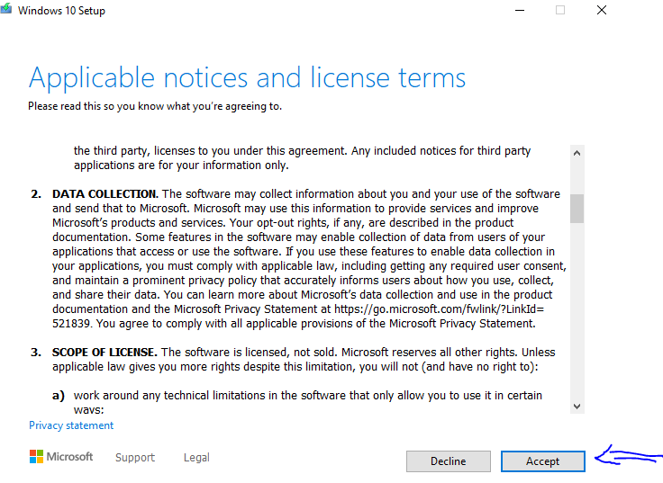

Hola Hermana de Leví, jaja. Disculpe!, no se como se llama usted
En esta página se listan todos los pasos para descargar e instalar windows 10
- 1- Dar click en la siguiente imagen, para descargar la herramienta
- 2- Ir a la ruta donde se guardo el archivo al momento de descargarlo y Dar doble click sobre el archivo, preguntará si desea ejecutarlo, dar click en si
- 3- Esperar a que cargue la siguiente opción
- 4- Pulsar en aceptar para aceptar los terminos del servicio
- 5- Esperar a que cargue la siguiente opción
- 6- Seleccionar la opción señalada en la imagen y dar en next
- 7- El instalador va a sugerirle las opciones, pensando que es ese mismo equipo en el que va a instalar W10, si es el mismo equipo debe dejar seleccionada la casilla y dar en next
- 8- Si no es el mismo equipo, o quiere cambiar el idioma debe quitar la seleccion y elejir lo que usted desea y dar en netx
- 9- En la siguiente imagen debe seleccionar la opción ISO FILE y dar en next
- 10- Aqui debe seleccionar la ruta donde guardará el archivo
- 11- Despues de dar en ok, el archivo empezará a descargarse. Debe esperar hasta que llegue al 100%. La velocidad de esto dependerá de su internet
